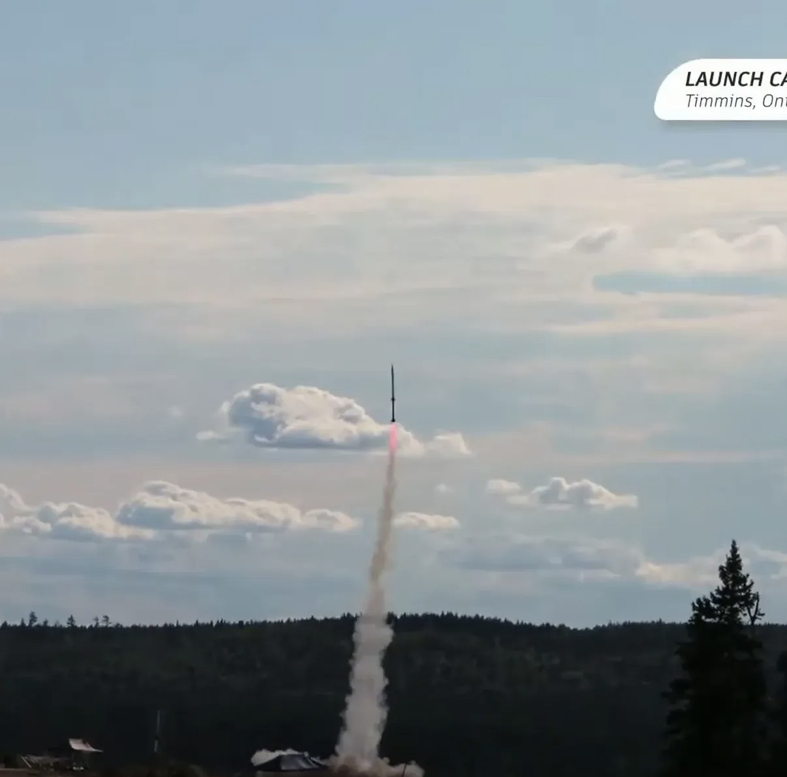

Riley "Ace" Workman builds machines that move with purpose.
Mechatronics engineering student with a strong track record of balancing full-time coursework, part-time work, and intensive technical volunteering across robotics, motorsports, and rocketry. My work combines hands-on hardware development, embedded systems, and machine learning with a rigorous quantitative foundation from actuarial and enterprise risk modeling.
BSc Double Major, Applied & Pure Mathematics '18
About
I build systems for real operating environments, where mechanical limits, noisy sensing, and safety constraints matter as much as theory. My background includes robotics design and manufacturing, embedded firmware, machine vision, additive manufacturing, and quantitative risk analysis. Across FSAE, Rocketry, capstone humanoid robotics, and research labs, I have focused on disciplined execution, strong problem-solving, and practical engineering delivery. My previous actuarial and risk management experience continues to shape how I approach reliability, enterprise risk, and safety-first design decisions.
Selected Projects
ARHA — Autonomous Retirement Home Assistant
Capstone project to design and build a functional nursing assistant humanoid robot for long-term care environments. Working in a multidisciplinary team to develop an autonomous assistant that mobilizes and delivers essential items, reducing nurse workload and retrieval time. My contributions focus on systems-level documentation, risk and safety analysis, and integration planning for reliable field operation.
GRASP-01 — Low-Cost 7-DOF Humanoid Arm
Supported the team in building a full-scale 7-DOF humanoid arm from the ground up and co-authored the GRASP-01 publication under Dr. Haoxiang Lang. Contributions included NX/DFM-driven part development, tensile validation work against FEA material assumptions, and conference presentation of research outcomes at Polytechnique Montreal.

ASL Translation Glove
Designed a real-time ASL-to-speech wearable built on ESP32-S3 hardware with flex sensors, a 9-axis IMU, wireless connectivity, and embedded audio output. Implemented multicore FreeRTOS firmware for deterministic 50 Hz acquisition and low-latency classification, then deployed quantized 1D CNN inference with finite-state logic and cloud TTS integration for reliable assistive communication.

Ontario Tech Racing — PCB Development
Contributed to Ontario Tech Racing's hardware and electronics build by designing PCB solutions in Altium, including pre-charge/discharge system work for the Formula SAE platform. Worked within FSAE rulesets and safety constraints while supporting practical on-vehicle integration and troubleshooting.

Pulley Robotics Testbed
Awarded an NSERC student researcher role under Professor Mitchell Rushton, supporting cable-driven and continuum robotics research. Designed and built the mechanical system for a robot table and pulley-based test environment, enabling controlled experimentation and repeatable validation workflows.

Akira Sensing — Farming Systems Buildout
Contributed to applied engineering and sustainability deployments with Akira Sensing and partners, supporting autonomous farming infrastructure and sensor system integration. Work included MIG/TIG/polymer welding, aquaponics plumbing, farm-scale wind/solar power grid buildout, trailer construction, and field sensor deployment for autonomous data operations.

Ham Radio Operations
Active amateur radio operator supporting station setup, field communications, and RF troubleshooting. Experience includes practical hardware setup and operating discipline in live environments, reinforcing systems reliability, technical communication, and decision-making under time-sensitive conditions.

Ontario Tech Space & Rocketry
Serve as Avionics lead and Chief Safety Officer, developing risk management systems, supporting technical documentation and insurance preparation, and contributing to flight electronics development. Supported launches exceeding Mach 1.4 and approximately 20,000 ft with a strong safety-first process.

Experience & Education
MASc, Mechatronics Engineering — Ontario Tech University
Research focus in AI/ML for intelligent autonomous systems under Dr. Haoxiang Lang, with robotics-centered applied development.
Honours BEng, Mechatronics Engineering (Robotics & Automation)
Ontario Tech University. CGPA 3.71/4.3 with coursework in robotics, machine vision, mechatronics design, industrial automation, and AI/ML.
Double Major, Pure & Applied Mathematics — University of Calgary
Foundation in statistics, numerical analysis, algebra, cryptography, and computational mathematics.
Quality Assurance Engineer Co-op — S&C Electric (Toronto)
Performed root-cause investigations, inspections, and quality audits on switchgear products; supported NDT program development; used CMM/metrology workflows and process documentation to improve quality control.
Senior Actuarial / Risk Management Analyst — AON
Led and presented quantitative risk projects, including EV battery degradation modeling, enterprise risk workshops, and financial/stochastic analyses using @RISK, R, VBA, and Excel.
Akira Sensing — Applied Engineering Contributor
Contributed to autonomous farming and sustainability projects spanning sensor hardware/software integration, welding, infrastructure build-out, and field deployment support.
Research Assistant & Lab Risk Manager — Ontario Tech University
Co-authored GRASP-01 publication, supported safety standards and lab training operations, and contributed to advanced prototyping and cost optimization initiatives.
NSERC Student Researcher & Undergraduate Teaching Assistant
Awarded NSERC research role in robotics and assisted Calculus I delivery for 900+ students while designing and building mechanical research infrastructure.